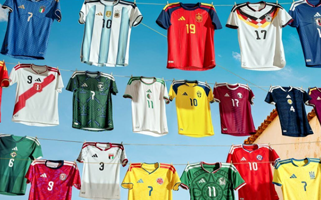

这篇文章在讨论什么
从现代体育赞助的排他性规则谈到短视频时代的碎片化传播，讨论大赛赞助、国家队与球星权益、出海目标和投资回报评估。 本站把原文中对当前研究最有用的部分组织成下方营销启发卡；它们是编辑归纳，不是原文逐字转载。
营销启发卡
将专访中的历史、价格、传播变化、信任价值、投资回报与规划建议拆成 10 张可独立引用的营销启发卡；每张卡都可继续进入相关案例或方法页。 卡片底部按主题连接全站相关案例、经典方法与深度文章。
1976 年奠定现代赛事赞助模板
在英国人 Patrick Nally 主导下，FIFA 与可口可乐签下价值 1000 万美元的合作，“InterSoccer 4”将广告曝光、门票、VIP 接待和品类独家排他权组成标准权益包。这套方案被视为 FIFA IP 赞助商业化的起点，Patrick Nally 也因此被称为“现代体育营销之父”。
赞助价格上涨：周期收入增长 55% 至 28 亿美元
原文访谈口径显示，2026 周期的 FIFA 合作伙伴四年权益约为 1.5 亿—2 亿美元，世界杯合作伙伴一年权益约为 1.5 亿美元，区域赞助商一年起步价也在 2000 万美元左右。最值得记录的数字是：本周期 FIFA 赞助收入较上一周期增长 55%，达到 28 亿美元。
直播之外，切片让同一次曝光继续增值
短视频把注意力从 90 分钟正赛延伸到进球、争议、场边、训练、球星与教练日常。2022 世界杯期间，FIFA 官方统计录得 36 亿次视频观看和 8.11 亿次互动。2026 年 FIFA 又将 TikTok 与 YouTube 设为 Preferred Platform，允许持权媒体发布更多精选切片、Shorts、延长集锦、幕后和点播内容，并引入全球创作者。赞助商在直播 LED 中建立的品牌识别，因此能在多轮切片和二次创作中被反复唤起。
赞助优先解决新市场的信任，而不是立即销量
对缺乏知名度的出海品牌，单纯买流量像在火车站门口发传单，难以解决当地消费者与经销商的信任问题。顶级赛事认可能为产品质量、企业规模和价值观提供快速背书。因此，中国品牌赞助世界杯的核心价值常是赢得信任、建立情感连接与打开出海形象，而非只追求短期销量。
排他权同时是进攻与防御资产
品牌一旦进入大型赞助往往少有轻易退出：一方面是企业能在销售与渠道中感受到作用，另一方面是不愿让竞品获得同样的独家地位。排他权也决定了企业必须提早谈判和锁定权益；像超级碗这类项目，往往要提前约一年启动，而不是赛前两三周才购买热度。
2026 中国官方赞助商减少的市场解释
原文提出两个可能原因：北美不是不少中国出海企业的首选市场；另一些企业刚进入出海早期，尚未拥有可以支撑顶级赛事赞助的预算和海外履约能力。
200 亿累计观看人次，是媒体价值估算的起点
原文受访者以“上届世界杯约 200 亿观看人次”说明 LED 围挡的全球媒体价值；这是跨平台、跨场次累加的“观看人次”，不是 200 亿名独立观众。可交叉核验的 FIFA 官方口径是：2022 世界杯在各类媒体上触达约 50 亿球迷，决赛约 14.2 亿观众，单场平均全球观众约 1.75 亿。赞助商购买的是品牌在全球高密度直播中的持续出现；立项时可用市场观众量、露出秒数、同屏品牌数、地区媒体价格进行折算，不应只写“提升知名度”。
LED 建立识别，切片让赛时曝光反复发生
原文给出的行业访谈估算是：区域赞助商每场约 2 分钟，二级“世界杯合作伙伴”每场约 6 分钟，顶级“FIFA 合作伙伴”每场约 6.5 分钟；顶级品牌可独占全场 LED，二级通常两家同屏，区域赞助可能四家同屏。这些时长需以当期合同为准，但它解释了价差：曝光时长、独占程度和可识别性不同。更重要的是，一次进球或争议画面会被剪成集锦、短视频、新闻回放和用户二创，场边品牌随其进入后续传播。因此要分开测算“直播保底曝光”与“切片增量曝光”，再叠加 VIP 票务、经销商招待和品牌自有内容的业务价值。
小预算出海可以先买“社区骄傲”
当预算不足以进入顶级赛事时，可以考虑英甲、西乙、德乙等城市型小俱乐部。这些俱乐部常是当地城市和社区的骄傲，对新进入市场的品牌而言，小规模赞助可能更快建立与社区的具体联系。
大赛像 Party，叙事必须比开赛日更早开始
世界杯赞助权益在赛事结束后的可用期很短，约只能延续三个月。与其在 Party 散场后强行续写，不如更早签约，从赛前多年开始连续讲故事。如果现在就布局 2030 世界杯，品牌就拥有约四年的内容、市场与渠道节奏，而不是只在决赛月抢热度。
如何用到项目中
把目标市场、权益层级、内容权利、渠道动作和可衡量业务出口放进一张赞助设计图。
专访观点用于理解行业变化；具体权益范围、费用与排他条款仍以合同和权利方公告为准。